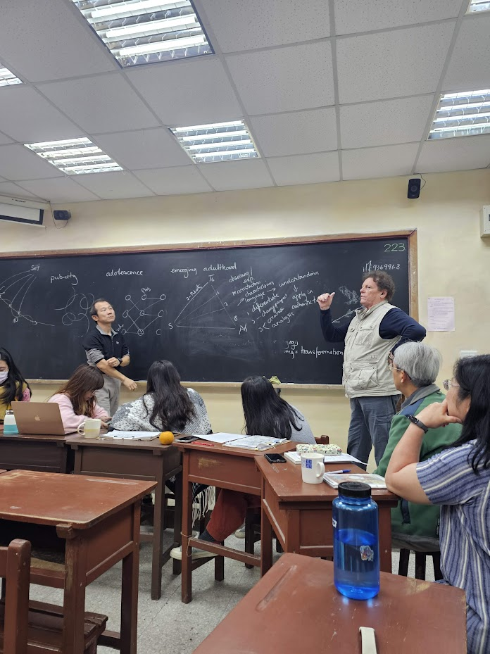
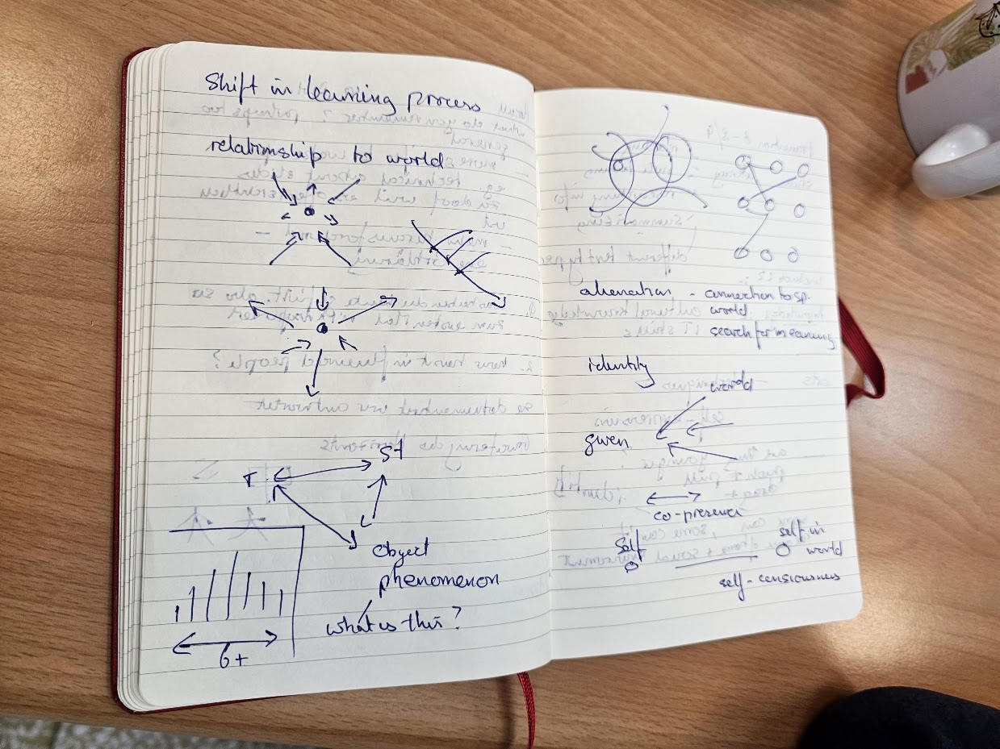
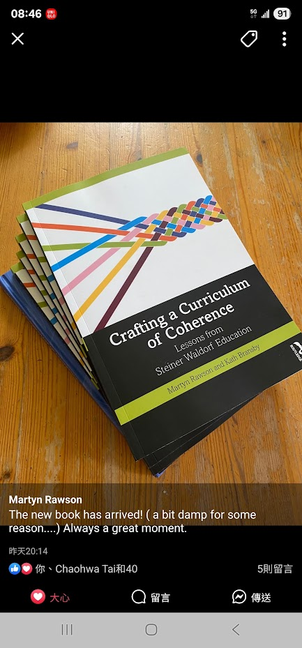

留下可以回看的學習材料
工作本可培養記錄與美感能力，保存班級的探索，供日後重讀。
Books develop documentation and aesthetic skills, preserving class explorations for later use.
工作本 · 教師學習 · 書寫與意義
中文為主 · 關鍵處雙語對照 · 內容仍為草稿
Rawson 與 Sievers（2023）討論工作本如何記錄學習、支持自主表達，以及教師如何給予回饋。
工作本可培養記錄與美感能力，保存班級的探索，供日後重讀。
Books develop documentation and aesthetic skills, preserving class explorations for later use.
教師給予指引，也讓學生自己措辭、繪圖及安排結構。
Guidance should leave room for learners to compose, draw and organise.
先釐清工作紀錄或完成作品的用途，再說明標準，兼顧差異與努力。
Purpose shapes feedback; criteria should recognise different starting points and effort.
中文暫譯「它反映了這個班級
走過的路。」English · original excerpt“it reflects the path taken by the class”
Main Lesson Books – Hoary Relic or Modern Tool?
Erziehungskunst · 2023 年 12 月號
閱讀完整英文原文 ↗中英摘要為導讀轉述；引文另標原句與暫譯。課堂提問為本頁延伸。
摘譯使用授權與中文校訂待確認。原文核對：。
這三篇論文處理同一個問題：教師如何把所學帶進教學，並在實踐中持續改變自己？合讀時，可以沿著「素養傾向如何形成、研讀與藝術如何支持它、進入學校之後如何繼續學習」這三條線索前進。
Rawson 將教師學習放在知識、技能、信念與素養傾向一起發展的脈絡裡。素養傾向可以培養，也會隨著參與、反思及新的經驗而改變；教師教育因此包含自我形成，並持續延伸到進入學校之後。
這一篇進一步討論教師培育中的文本研讀、藝術與工藝活動，以及一般教育學知識。研讀不只在掌握作者說了什麼，也包括辨認自己如何回應，透過對話釐清，並寫下理解帶來的改變。
焦點移到實習與學校生活：新手教師如何在參與、引導及回饋中逐漸承擔責任。作者借用社會實踐的學習觀點，討論人如何在參與中轉變理解與能力，也在新的情境裡重新運用、調整原有的做法。
研讀與素養傾向的形成
From studying a text to changing how we understand and act
作者先問：研讀《基礎文集》，如何形成支持教學的素養傾向？他把既有理解、文本與對話連起來，討論視域的改變，並延伸至沉思深化與情境中的教學判斷。五步整理的是其中的詮釋學研讀。
Hermeneutic dialogue and contemplative study connect understanding with dispositions for practice. The five moves summarise the hermeneutic study process.
寫下既有想法與聯想，整理彼此的關係。
Bring existing ideas and associations into view.
以詞語、符號或非語言方式，留下文本帶來的感受。
Notice an intuitive response to the text.
用自己的文字，整理文本的主要觀點。
Summarise the text’s main ideas in writing.
透過討論釐清，連結其他經驗與想法。
Clarify ideas through discussion and connections.
記下何者重要、理解如何改變，以及打算如何運用。
Record what matters, what has changed, and what you intend to do.
文章接著轉向藝術與工藝，探討感知、創作及與材料、他人的相遇如何參與自我形成。研讀、沉思與藝術實作，是作者討論素養傾向養成的不同面向。
The article next turns to artistic and craft practices, exploring another dimension of learning dispositions.
依 Rawson 第二部分原文頁 25–31 整理；五步見原文第 29 頁（PDF 第 7 頁）。中英標題與說明為導讀編排及轉述，第二步英文為本頁簡稱。適用脈絡為教師培育中的文本研讀。

巴特《批評論集》（Essais critiques，暫譯）中的〈作家與書寫者〉（Écrivains et écrivants，暫譯），區分以語言說明事物、以及在語言中探索意義的兩種寫作取向。許宏儒對佛賀內自由書寫的分析，則把問題帶回教育：每個孩子都是敘寫的主體；經驗透過書寫、彼此聆聽與合作，逐漸轉為可以交流、反思的理解。
比較圖接著把視野擴展到巴特、德里達與 Rawson，並列意義的權威、理解的框架與自我的重新形成。三種材料在此相接：書寫使經驗成為可討論的文字；不同的閱讀與回應，又讓理解及參與其中的人的位置有機會改變。
圖說｜這張比較圖如何整理而成本圖以「意義如何形成、參與者如何改變」為共同問題，從三條文獻線索各取一個焦點：巴特對作者意圖與文本意義的討論、德里達對結構與中心的提問，以及 Rawson 對相遇、反思與實踐中自我形成的分析。三欄共用「核心觀點」「理解／人的變化」「課堂延伸」等欄目，使不同問題可以對照閱讀。
下方連線把三欄帶回「表達 → 遭遇不同理解 → 修正 → 新的理解與自我關係」這條課堂思考線索。這是製圖的綜合詮釋；課堂提問也是延伸編寫，並非作者原句。三者並非同一學派，也不代表必然依序發生的學習階段。

沿用既有文獻索引，補入本次附件與比較圖。各筆核讀範圍、未核讀及待確認事項保留原註記。
教學中的互動學習時段——重述、延伸討論到引導寫作（2025/6/28）（限原有權限閱讀）
已讀網頁正文與折疊文字；原頁圖像未逐一核讀。作為改編起點。
Main Lesson Books – Hoary Relic or Modern Tool?
已讀正文。工作本、獨立表達與回饋的專業論述；非工作本效益實驗。
A Theory of Waldorf Teacher Education / Part 1: Learning Dispositions，RoSE 11(2)
核讀學習理論相關段落。教師教育研究；連到學生工作本屬理論延伸。
自由書寫在課程革新上的啟思：以法國「佛賀內教育學」為例。課程與教學，21(4)，81–120
已取得原PDF文字，重點核讀頁112–115。DOI：10.6384/CIQ.201810_21(4).0004。
與上一筆為同一篇文章；保留原始取用途徑。
The Role of Study and Artistic Exercise，RoSE 11(2)，23–36
依使用者提供之原文核對篇名、卷期與研讀步驟；期刊頁面。
Learning Knowledgeable Action with Purpose through Learning-in-Practice，RoSE 12(2)，1–12
年次依原文與期刊卷期；期刊頁面。
使用者提供，29 頁；封面標示為 AI 輔助非官方譯本，本輪未逐句校訂。
既有單頁概念圖：羅蘭巴特、德里達與 Rawson。保留綜合詮釋及非同一學派、非先後階段的說明。

已核出版社書目：2024年12月中文初版；原分享為2025年。未在本次逐頁核讀全書。
Steiner Waldorf Pedagogy in Schools: A Critical Introduction
英文專書書目入口；未核讀全書。與上一筆為原著與中譯關係。
Crafting a Curriculum of Coherence / 教學創造力：華德福課程脈絡的連貫性
出版社列中文2026年5月初版。原HackMD另載2025回顧摘錄；摘錄與出版版本尚未逐頁比對。
本次僅確認原材料連結，未核讀連結全文。
原材料所列延伸，未另核讀全文。
Why Group Interaction Is Essential for Learning
保留原頁連結；本次未核讀正文，不作核心證據。
〈作家與書寫者〉（Écrivains et écrivants，暫譯）（1960），收入 《批評論集》（Essais critiques，暫譯）
核讀相關法文段落。兩種寫作取向採轉述，非逐字中文引句。
取得原文PDF與相關檢索片段；本教學頁不作長篇逐字引述。
Phenomenology of Perception，第一部第六章：言說與作為表達的身體
核對出版社書目、原文相關檢索片段；新增精確引文時須核對版次與頁碼。現象學脈絡。
核讀先前理解與理解活動相關檢索片段；非全書逐頁核讀。哲學詮釋學脈絡。
原HackMD另提 Damasio、Loebell、Lutzker、Hattie 與 Donoghue、Biesta，以及布朗肖、德里達等。由於各筆完整書目、引句與頁碼尚未全部核實，本版不補造出處，也不以轉引替代原典查證。
「從素寫到書寫」不直接等同於兩個學派的更替；「書寫成為存在的證明」目前只確認出現在原HackMD整理文字，不歸為許宏儒或其他哲學家原句。
前 11 項保留原頁連結。第 12 至 23 項列出文獻名稱，校務資料另以文字標示雲端位置。